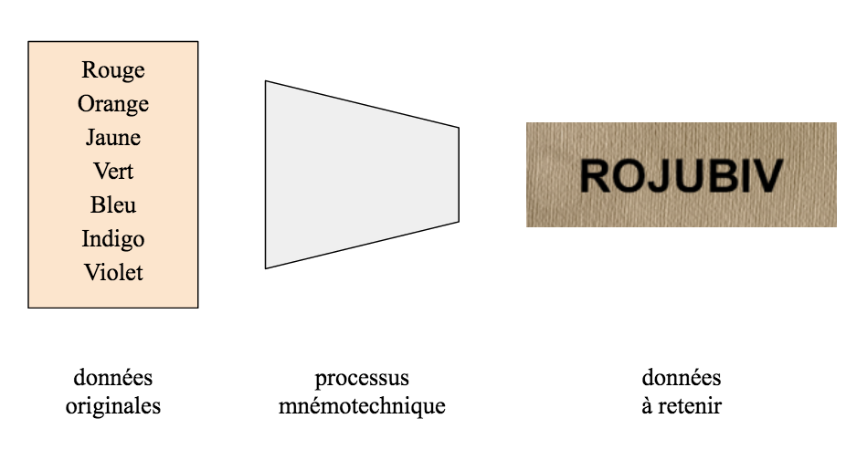
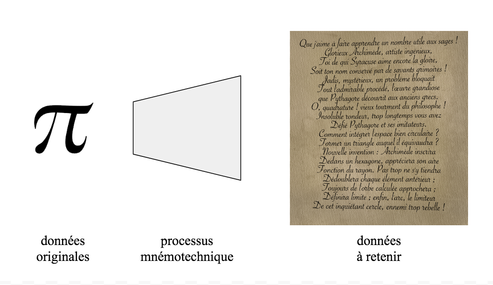
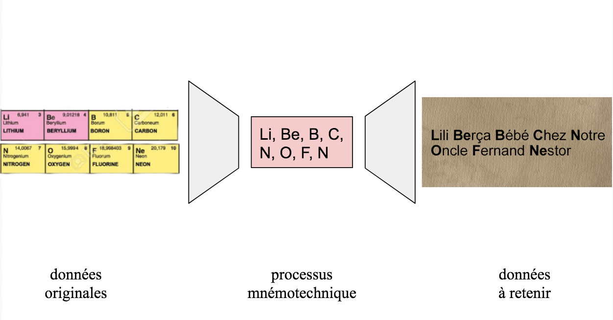
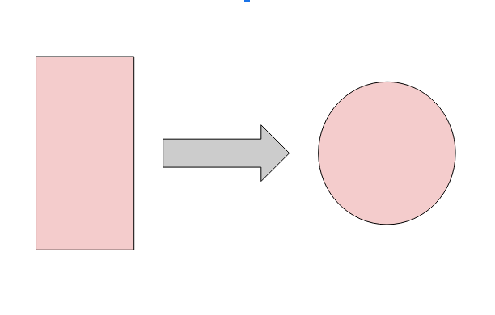

Mais où est donc Ornicar ?...
Les moyens mnémotechniques se définissent comme des stratégies qui facilitent l'encodage de l'information dans la mémoire. Un peu comme un fichier wav peut être encodé en mp3, les informations contenues dans notre cerveau peuvent être compressées pour être stockées puis décompressées pour être utilisées.
Le codage de l’information
Codage réductif
Cette stratégie mnémotechnique tend à réduire l'ensemble de l'information stockée. Un exemple est celui des deux méthodes les plus employées pour se souvenir de l'ordre des couleurs du spectre, c'est-à-dire, rouge, orange, jaune, vert, bleu, indigo, violet. Le codage réductif utilise les lettres initiales pour créer un acronyme prononçable et facilement répétable tel que ROJUBIV. Un avantage des procédés mnémotechniques de réduction de codage est qu'ils peuvent être répétés très rapidement et être maintenus verbalement lors du traitement d'une autre tâche.

Un exemple de ce procédé peut être trouvé dans la nature. Un écureuil peut accumuler jusqu’à 3000 noisettes en une saison. Ce processus n’est pas aisé car un écureuil n’est pas tout seul dans sa tâche et ses noisettes sont sans cesse convoitées par tous ses congénères. Un même animal ne peut pas cacher ses noisettes au même endroit et est obligé de les dispatcher un peu partout au cas où une cachette serait découverte. Mais alors comment les retrouver ?
Les écureuils n’utilisent rien d’autre que ce processus de codage réductif (chucking en anglais). Chaque type de noisette est caché dans un endroit précis. Ainsi chaque écureuil n’a qu’à se souvenir de quelques cachettes seulement et ainsi il saura où sont toutes ses amandes, noix de pécan et noisettes en ne mémorisant que trois emplacements. Ce processus peut être bouleversé si une noisette est trouvée trop loin de sa cachette associée. Un écureuil ne va pas s’éparpiller au risque de tout mélanger tout comme un processus mnémotechnique doit être ordonné pour être retenu !
Codage élaboratif :
En 1905 a été publié un poème en alexandrins, dont les deux premiers vers étaient déjà connus auparavant :
Que j'aime à faire apprendre un nombre utile aux sages !
Glorieux Archimède, artiste ingénieux,
Toi de qui Syracuse aime encore la gloire,
Soit ton nom conservé par de savants grimoires !
Jadis, mystérieux, un problème bloquait
Tout l'admirable procédé, l'œuvre grandiose
que Pythagore découvrit aux anciens grecs.
O, quadrature ! vieux tourment du philosophe !
Insoluble rondeur, trop longtemps vous avez
Défié Pythagore et ses imitateurs.
Comment intégrer l'espace bien circulaire ?
Former un triangle auquel il équivaudra ?
Nouvelle invention : Archimède inscrira
Dedans un hexagone, appréciera son aire
Fonction du rayon. Pas trop ne s'y tiendra
Dédoublera chaque élément antérieur ;
Toujours de l'orbe calculée approchera ;
Définira limite ; enfin, l'arc, le limiteur
De cet inquiétant cercle, ennemi trop rebelle !
Professeur, enseignez son problème avec zèle !...
Ce poème permet de retenir les décimales de pi. Le principe est le suivant : le premier mot “que” contient trois lettres, le deuxième “j” une seule, le troisième “aime” en contient quatre, etc. On reconnaît donc pi : 3,14. Chaque mot suivant contiendra le nombre de lettres correspondant au chiffre suivant des décimales du célèbre nombre.
La quantité d’informations à retenir semble plus grande car il y a plus de caractère, mais il n’en est rien ! La redondance de la langue française (et de toutes les langues) est d’environ 50%1, c’est pour ça que l’on peut lire un texte comme celui-ci : “S vs povz lir c txte…”. Pourquoi donc ajoutons-nous des caractères redondants ? Pour que le sens soit plus clair ! Ici c’est la même chose, le poème nous permet de retenir mieux les décimales de pi car il donne du sens à chaque chiffre.

Codage double, réductif puis élaboratif :
Ce procédé consiste à mémoriser des données à l’aide d’un intermédiaire. Mettons par exemple que nous souhaitions retenir la deuxième ligne du tableau périodique des éléments à savoir : le Lithium, Béryllium, Bore, Carbone, Nitrogène, Oxygène, Fluor et Néon qui ont pour symboles respectifs Li, Be, B, C, N, O, F et Ne.
On s’aperçoit que la phrase suivante : “Lili Berça Bébé Chez Notre Oncle Fernand Nestor” est beaucoup plus aisée à retenir que nos éléments. En effet cette phrase (même si elle est farfelue) est pourvue de sens et permet donc à notre esprit de nous imaginer une sorte de petite histoire. Or les mots de cette phrase débutent, dans l’ordre, par les symboles des éléments que l’on souhaite retenir.
On crée ici une représentation abstraite avec les symboles chimiques, puis on reconstruit un nouveau discours qui a du sens pour être mieux retenu.

Le codage double est le cas le plus courant de phrases mnémotechniques. Il contient beaucoup d’exemples :
retenir l’ordre des planètes : “Mercredi, viendras-tu manger, Jean, sur une nappe ?”
retenir les phases de la mitose (Prophase, Métaphase Anaphase Télophase.) : “Promets athée.” (ProMéATé)
Cette dernière phrase est d’autant plus percutante qu’elle contient une sorte de paradoxe. Un athée ne croyant pas en Dieu ne peut pas “promettre”.
Les phrases mnémotechniques sont d’autant plus efficaces que la phrase est percutante.
Par exemple : “Laissant Son Kimono Bleu À Trois Gamins, Elle Put Maintenir Poutine” permettant de retenir les dirigeant de l’URSS (L = Lénine, S = Staline, K = Khrouchtchev B = Brejnev, À = Andropov, T = Tchernenko, G = Gorbatchev… la « virgule », et E = Eltsine, P = Poutine, M = Medvedev, P = Poutine) est moins percutante car elle ne veut rien dire. Elle a cependant une certaine efficacité car elle raconte une (étrange) histoire.
Codage sémantique :
On peut regrouper les derniers cas de phrases mnémotechniques dans cette catégorie.
On détourne un des sens des mots et des caractères, on se concentre sur l’aspect visuel de la lettre (le “i” est un bâton) et aussi de ses homophones (le “L” est aussi une aile). Les phrases jouent sur les sens multiples des mots.
Encore une fois la phrase ayant la forme d’une comptine, d’un poème est tout de suite plus facile à retenir.
“L’hirondelle prend deux “ l ” car elle vole avec deux ailes”
“La vieille ne peut marcher qu’avec ses deux bâtons”
“Mourir ne prend qu’un “ r ” car on ne meurt qu’une fois”
“Le charme d'Adam est d'être à poil”
“Toujours, toujours un “ s ” et à jamais, ne jamais l’oublier”
“Enveloppe ne prend qu’un “ l ” car on ne met qu’une lettre dans une enveloppe”

En 2020, à une époque où des milliards de données peuvent être stockées et accessibles pour quelques euros, ces moyens mnémotechniques sont-ils toujours d’actualité ? Les capacités mémorielles des machines surpassent en tous points les nôtres. Ces outils peuvent retenir toutes les informations possibles sans en oublier une seule : un don que nous n’aurons jamais. Vient donc la question suivante : pouvons-nous nous reposer sur les capacités mémorielles des ordinateurs jusqu’à ne plus en avoir nous-même ? Sur certains aspects ce sujet est d’actualité. Une étude canadienne de 2018 (comme bien d’autres) montre que les capacités cognitives et la concentration des enfants baissent avec une utilisation massive des écrans. Est-ce donc la fin des moyens mnémotechnique ? Tous ceux qui lisent ces lignes savent que la réponse est non. Les phrases du codage sémantique ne sont-elles pas dictées par tous les parents dès le plus jeune âge à leurs enfants ? Les lycéens ne s’appuient-ils pas sur le codage double pour retenir avec plus d’aisance les éléments chimiques ? Nous continuons malgré tout d’exercer notre mémoire, comme si on s’interdisait d’oublier, de laisser disparaître ce don si précieux que nous avons. Bien qu’il existe des machines possédant pour une seule d’entre elles plus de mémoire que tous les êtres humains de cette planète nous continuons de nous transmettre ces petits jeux mnémotechniques. Tout simplement car ils nous aident à structurer notre esprit, qu’ils sont très formateurs et car nous continuerons à aimer les histoires.
Source :
liste exhaustive :
1 C.E. Shannon et W. Weaver : The mathematical Theory of communication, University of Illinois, Urbana III, 1949
https://fr.wikibooks.org/wiki/Liste_de_mn%C3%A9moniques
https://www.sebastien-martinez.com/blog/22-moyens-mnemotechniques/
https://www.montremoicomment.com/scolaire/comment-apprendre-le-tableau-periodique-des-elements.html
http://villemin.gerard.free.fr/Multimed/MemoIntr.htm
https://www.futura-sciences.com/planete/questions-reponses/zoologie-ecureuil-sait-il-cache-noisettes-10347/
https://www.20minutes.fr/sante/2344331-20180927-ecrans-partir-deux-heures-jour-nuisent-capacites-intellectuelles-enfants